工作台（04 篇）解决的是"把一份数据变成一张图"，而一次完整的科研工作远不止于此：数据要先体检与清洗，模型要拟合与比较，结论要能锁定环境、打包交付，还要能被别人原样重跑。这些环节在 Ergalics Studio 中以科研工具集的形式提供——19 个独立工具，按五个分组组织，统一挂在 /studio/:toolId 路由下。
工具集与工作台共享同一套底座：同一个 .clproj 项目、同一批数据文件、同一组 src/core 内核、同一条插件渲染通路。区别只在界面形态——工作台是插件式的通用画布（四区布局加参数面板），工具集是任务式整页，一个页面把一项科研任务走完。
| 维度 | 工作台 | 科研工具集 |
|---|---|---|
| 入口 | /workbench | /studio/<toolId> |
| 形态 | 四区布局 + 参数面板，插件可任意切换 | 任务式整页，每页一个明确的科研目标 |
| 组织 | 按插件（59 个，见 03 篇） | 按学科分组（5 组 19 个工具） |
| 数据 | 项目数据文件 + 拖入即路由 | 复用同一份项目数据文件 |
| 模式 | 标准 / 流程 / 积木 / 代码四种（见 04 篇） | 不使用模式切换，页面自带交互 |
| 适用 | 探索、"我该用哪个插件" | 交付、"我要完成哪一步" |
src/pages/research/toolRegistry.ts 是工具集的唯一事实来源：每个独立科研界面在这里声明一次，由 /studio 路由、顶栏启动器与欢迎页启动网格三处共同消费。新增一个工具的成本是"注册表加一条记录 + i18n 加标题与描述两个键"，不需要改动路由、导航或启动器。
ResearchTool 记录的字段：
| 字段 | 含义 |
|---|---|
id | 稳定标识，同时是 /studio/<id> 的路径段 |
path | 规范路由 /studio/<id>，由 id 推导 |
legacyPath | 改造前的 hash 路径（默认 /<id>），作为客户端重定向保留，使旧书签不失效 |
| 字段 | 含义 |
|---|---|
icon | ToolIconKind 图标种类 |
titleKey / descKey | i18n 键；描述默认取 tool.<id>.desc |
group | 五个学科分组之一 |
inGrid | 是否出现在欢迎页启动网格（默认是） |
requireProject | 无激活项目时是否渲染 EmptyProject 门禁页（默认否） |
component | React.lazy 包装的页面组件，每个工具一个独立分包 |
配套导出：GRID_GROUPS（分组顺序）、GRID_TOOLS（入网格的子集，19 减 1 为 18 个）、getTool(id) 与 TOOLS_BY_LEGACY_PATH。
路由。App.tsx 只声明 6 条显式路由：/（欢迎页）、/workbench（工作台）、/studio/:toolId（全部科研工具）、/settings、/plugin/:pluginId、/share/:payload，其余一律回落到欢迎页。19 条旧路径的重定向由 RESEARCH_TOOLS 在模块加载时自动生成，因此数量永远与注册表一致，不存在手工维护的重定向表。应用使用 HashRouter，因此深度链接形如 #/studio/uncertainty。
项目门禁。StudioToolPage 承担三件事：为懒加载页面提供 Suspense 骨架；深度链接或冷启动时一次性恢复最近项目（与工作台行为一致）；对声明了 requireProject 的工具，在项目未激活时渲染 EmptyProject（明示的"新建 / 打开"动作）而不是自动创建一个空项目——避免用户在深链接进入时莫名其妙多出一个空项目。未知的 toolId 渲染 EmptyState（"工具不存在"），而不是白屏或抛错。
外壳。所有工具页共用 ToolShell：顶部是返回工作台、工具图标与名称、语言与主题切换；主体是工具自己的内容区（居中列、页面级滚动）；底部是工作台同一个 StatusBar，常驻显示 GPU / WASM / 存储状态与帧率。
分组按学科划分，互斥且穷尽。下表是注册表中的完整清单（名称与用途取自实际发布的中文 i18n 文案）：
| 分组 | 工具 id | 名称 | 用途 | 需项目 |
|---|---|---|---|---|
| 测量与评估（2） | uncertainty | 不确定性套件 | 蒙特卡洛、Bootstrap 与 GPU 加速的置信区间 | |
profiler | 数据画像 | 数据体检：缺失值、分布、相关性与质量画像 | ||
| 建模与推断（4） | model-lab | 模型工作台 | 回归建模、拟合诊断与多模型对比 | |
inference | 贝叶斯推断 | 贝叶斯推断模板与 MCMC 后验诊断 | ||
model-inference | 模型推理 | 在浏览器内用 WebGPU 运行 ONNX 模型并查看推理结果 | ||
sweeps | 参数扫描 | 参数网格与拉丁超立方扫描、响应面 | ● | |
| 数据与谱系（5） | sql | SQL 数据工作台 | 直接对项目数据文件运行 SQL 查询 | ● |
lineage | 数据血缘 | 文件、运行与产物的血缘图谱 | ||
figures | 图表工作台 | 多面板出版级图表排版与 SVG / PDF / PNG 导出 | ● | |
analysis | 数据分析 | 假设检验、相关性与基础统计分析 | ||
cleaning | 数据清洗向导 | 分步引导完成表格数据的转换、清洗与去重 | ● | |
| 信号与记录（3） | signal | 信号实验室 | 频谱、滤波与时域信号处理 | ● |
notebook | Notebook | Markdown + Python 的可复现实验记录 | ● | |
runs | 实验记录 | 实验运行台账、指标差异与成对对比 | ||
| 报告与复现（5） | report | 报告生成器 | 叙述、图表与结果打包成交互报告 | ● |
reprolock | 可复现锁 | 环境快照与可重复性指纹锁定 | ||
supplement | 补充材料打包 | 数据、代码与许可一键打包为补充材料 |
| 分组 | 工具 id | 名称 | 用途 | 需项目 |
|---|---|---|---|---|
course | 课程模式 | 布置作业、收集并批改学生的离线实验成果 | ● | |
gallery | 作品画廊 | 浏览并重新打开社区分享的可复现作品 |
合计：测量与评估 2 + 建模与推断 4 + 数据与谱系 5 + 信号与记录 3 + 报告与复现 5 = 19。其中 8 个绑定项目（sweeps、sql、figures、signal、notebook、report、course、cleaning），analysis 不进入启动网格（inGrid: false），因为它同时由工作台顶栏的独立按钮发起，避免同一入口出现两次。
uncertainty）——把"这个数字有多确定"变成可计算的对象。提供 Bootstrap 置信区间、蒙特卡洛传播与 MCMC 采样三条路径，并给出 R-hat、有效样本量 ESS、HDI 与 MCSE 等收敛诊断；样本量足够大时自动切到 WGSL GPU 引擎（每链一个 workgroup），未达阈值或设备不可用时回落到 CPU，两条路径在同一随机数序列下结果在数值容差内一致（内核细节见 07 篇）。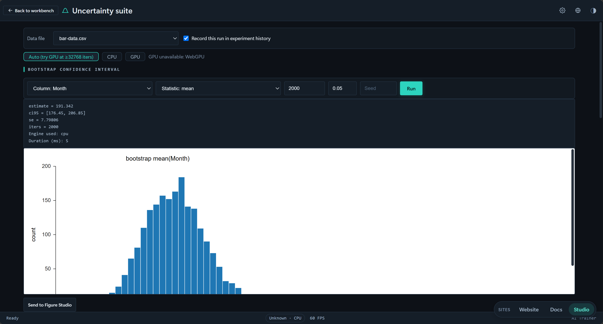
profiler）——数据体检。流式单遍计算：数值列用 Welford 递推求精确均值与方差、蓄水池采样求分位数与 MAD，并以修正 z 分数标记离群；文本列用 HyperLogLog 估计基数、Space-Saving 求 Top-K；表级给出 Pearson / Spearman 相关与重复率，最终综合成 0–100 的确定性质量分与问题清单，按内容指纹缓存以支持重复打开。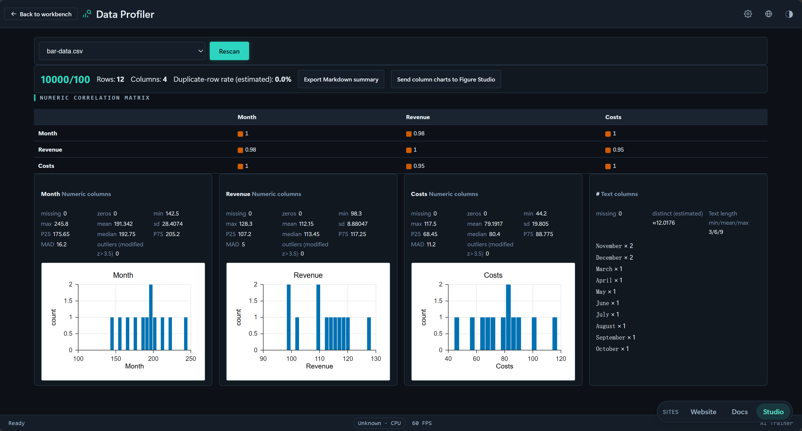
model-lab）——拟合与诊断。支持普通最小二乘（Householder QR）、逻辑回归（IRLS）、岭回归（K 折交叉验证选参）与多项式拟合，产出含估计值、标准误、p 值与置信区间的系数表，并附 2×2 残差诊断图（残差-拟合、QQ、尺度-位置、残差-杠杆），支持多模型横向对比。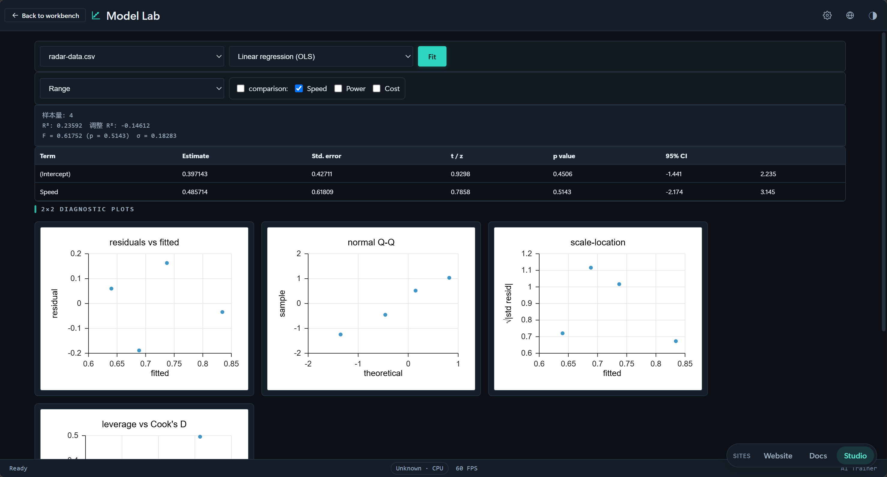
inference）——Inference Forge。HMC / NUTS 采样器（NUTS 带 U 形回旋判据与 Dual Averaging 步长自适应，无须手工设步数）、声明式似然模板配数据尺度化的弱先验、R-hat 与 bulk / tail-ESS 等后验诊断，以及 WAIC 与 PSIS-LOO 模型比较。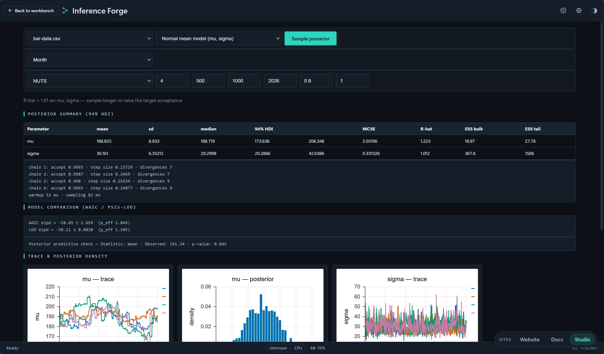
model-inference）——把已训练好的模型搬进浏览器：用 WebGPU 运行 ONNX 模型并查看推理结果，适合"模型在别处训练、结论要在这里复现"的场景。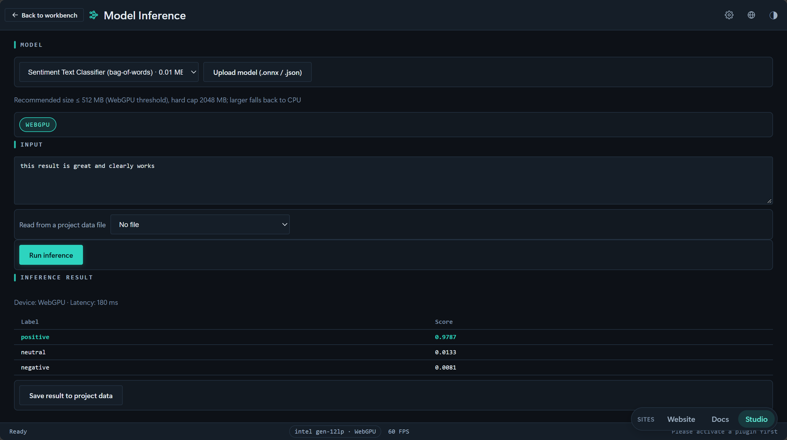
sweeps）——expandPlan 把扫描计划展开为确定性设计点：全网格 / 列表轴走完整笛卡尔积，全拉丁超立方轴按维度分层抽样；混合 lhs 与 grid 的方案被显式拒绝，因为样本量此时没有无歧义的定义。执行后可看响应面。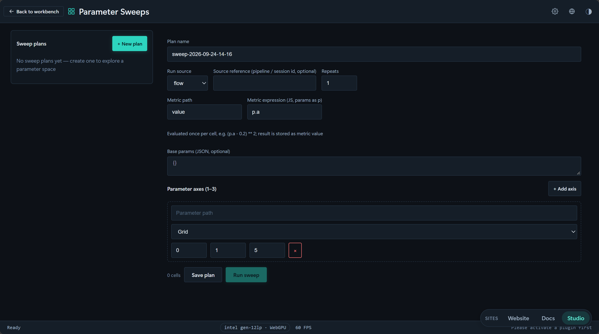
sql）——DuckDB-WASM 引擎，首次使用时懒加载；项目数据文件注册进 DuckDB 虚拟文件系统并直接暴露为表，因此可以对 .clproj 里的文件写 SQL。查询支持超时与 AbortSignal，中止或超时会终止 Worker 并丢弃单例，下次调用重建实例——一次跑疯的查询不会拖垮整个页面。lineage）——以运行记录上的文件 id 把项目文件（源）连到运行（变换），绘制成 Sugiyama 式分层 DAG（最长路径分层、单趟重心排序、行居中）。领域层无 React / store / DOM 依赖，画布可独立测试。figures）——出版级组图。FigureSpec 是挂在期刊模板网格（IEEE / Elsevier 栏宽、色盲友好调色板）上的多面板容器，composeFigure 渲染为单张独立 SVG（嵌套面板 viewport 加 a / b / c 面板标签），exportFigure 处理 SVG / PDF / PNG-600dpi 下载。组图只重新定尺寸，绝不修改原 PlotSpec。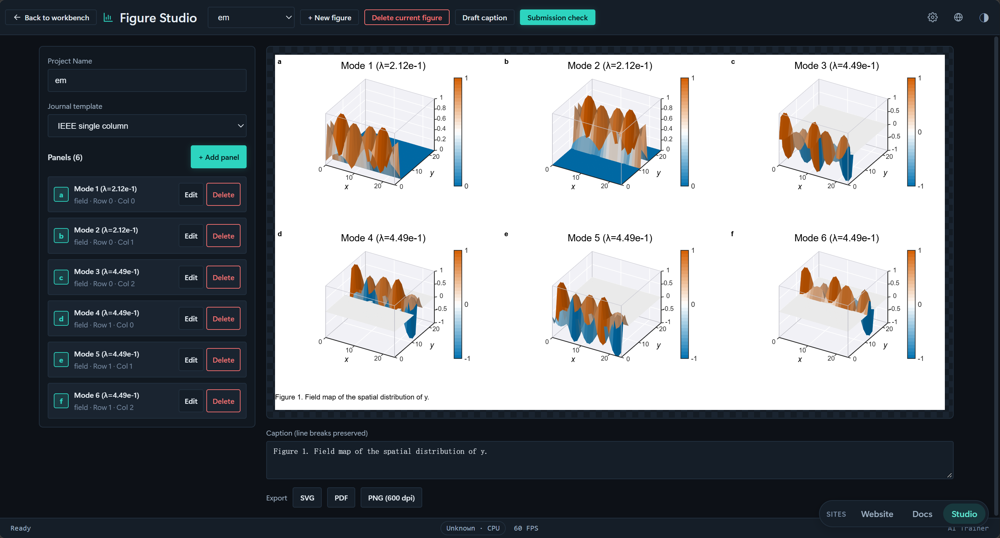
analysis）——假设检验、相关性与基础统计分析的常规入口：t 检验族、单因素方差分析、Mann-Whitney U、卡方独立性检验、Cohen's d 效应量，以及 Bonferroni 与 Benjamini-Hochberg 多重比较校正；结果可直接转写成中英双语的出版级句子。cleaning）——分步引导。步骤模型是五类可序列化操作：类型转换、缺失值策略（删除 / 均值 / 中位数 / 零 / 前向填充）、离群标注（IQR / z 分数）、去重、列重命名。每一步永不改写输入表，因此可以逐步前进、回退、跳转或"撤销该步"；质量侧的期望契约由 data-quality 提供（见 07 篇）。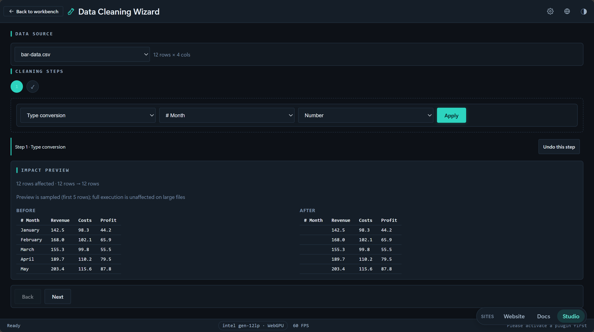
signal）——频谱、滤波与时域处理。基 2 FFT 与幅值谱（与 GPU 端 fftKernelWGSL 数学一致）、Hann / Hamming / Blackman 等窗函数、Savitzky-Golay 平滑与滑动平均、自相关 ACF 与偏自相关 PACF，以及经典加性时序分解 x = 趋势 + 季节 + 残差。滤波后的列可作为派生文件保存回项目，并自动进入血缘图。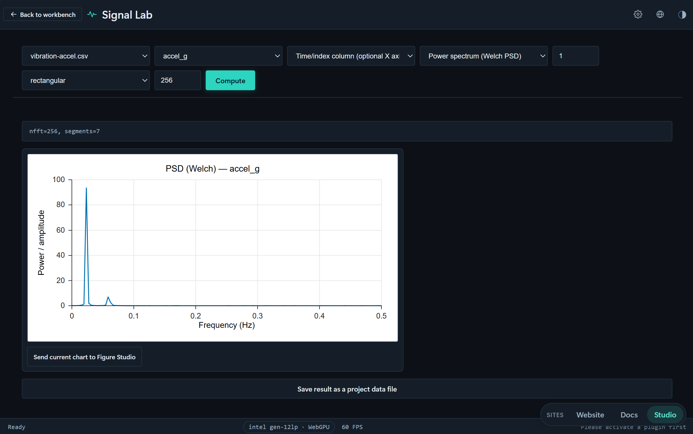
notebook）——Markdown 与 Python 单元混排的可复现实验记录，执行走代码模式同一个 Pyodide 运行时，因此 notebook 与脚本看到的是同一个 studio API；单元列表持久化在 project.state.notebook。runs）——全工具的运行台账。流程、积木、代码、笔记本、扫描、不确定度、建模、推断的每一次执行都会留下耐久快照（参数、指标、耗时、来源），支持指标差异与成对对比。记录存于 IndexedDB 的 runs 存储而不写进 .clproj，使项目文件保持小巧，并随项目删除一并清理。report）——buildReport 把有序章节（标题、Markdown、图表工作台的图、数据表、运行摘要、筛选器）构建成单一自包含 HTML：内联 CSS、内联 SVG、内联 JSON 数据与零依赖原生 JS 控制器。所有用户字符串先转义，内嵌 JSON 以 <script type="application/json"> 输出并把 < 做 unicode 转义，杜绝 </script> 载荷逃逸——报告可以安全地直接投递给他人。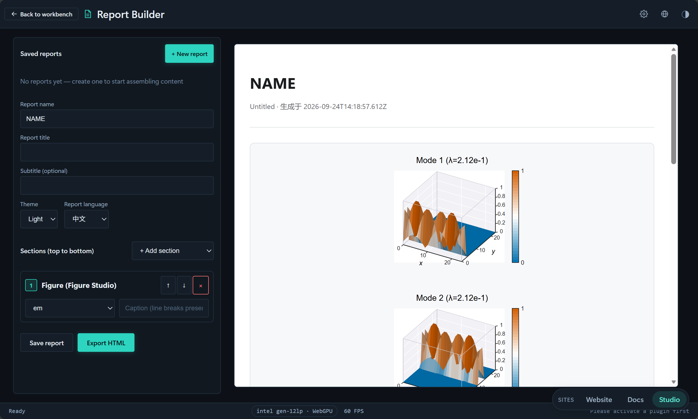
reprolock）——导出与校验 repro.lock：数据指纹、参数哈希、种子与代码快照，支持五类漂移判定与一键重跑；环境快照（版本、平台与内核可用性）一并纳入锁文件，使"漂移发生在数据还是环境"有明确答案。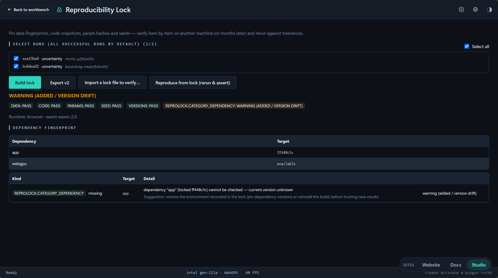
supplement）——manifest.json（项目元数据、运行记录、血缘图、作者与许可表单）加可选的原始数据文件与代码会话，用 fflate 打成研究者随论文一起上传的 ZIP。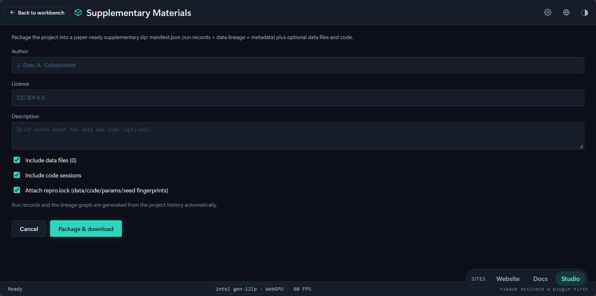
course）——本地优先的教学闭环：教师创建课程（由本地身份字符串标识，无账号体系）、发布绑定学科模板的作业；学生领取任务、在项目中作业并提交运行结果的 repro.lock 快照；教师查看学生 × 作业矩阵、记录评分与评语，并把整个班级按学生一目录导出为包。持久化在 IndexedDB courses 存储。gallery）——本地"我的分享"存储（localStorage），记录分享出去的作品元数据与净化后的快照 HTML，使详情弹窗可离线重开。v1 不上传任何内容，下架只做标记（保留审计轨迹）并从所有列表过滤。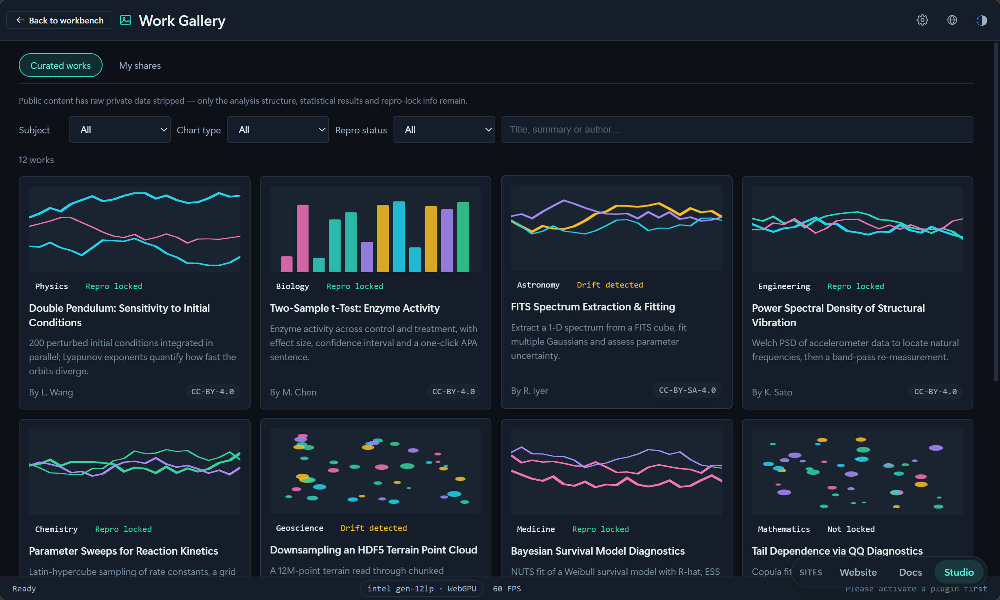
同一份注册表驱动三个入口，行为统一：
/，ToolGrid）——按五个分组陈列 18 个工具卡片，附过滤框；搜索时分组被打平成一列。卡片点击即记录使用并跳转 /studio/<id>。ResearchLauncher）——取代了早期的平铺式工具菜单。顶部是"最近使用"分组（最近 3 个，带角标），其下按学科分组列出全部工具；每项显示图标、名称与一行描述，使工具在打开前就能被识别；支持过滤输入与完整键盘导航。#/uncertainty 的书签会被自动生成的重定向送到 #/studio/uncertainty。"最近使用"由 src/core/recentTools.ts 维护，存储在 localStorage（键 ergalics:recent-tools），最多保留 8 条、界面只展示前 3 条——留出余量是为了让裁剪永远不产生空位。
工具是分立的页面，但不是孤岛。它们通过三条共享通道协作，这也是把 19 项能力放在同一注册表下的实际意义：
src/core/dataFiles.ts 让项目自有文件、内置示例与代码模式的 _FILES 走同一套解析逻辑；src/pages/research/researchUi.ts 是这一层之上的薄胶水（无 React 依赖），负责"装载表格并识别数值列""把 PlotSpec 送进图表工作台""把派生输出组装成 CSV 存回项目"。因此数据清洗的结果能被信号实验室直接读取，滤波后的列又能被模型工作台拟合。PlotSpec 数据结构，可以被图表工作台接收为组图的一个面板，从而复用期刊模板、面板标签与矢量导出。experiment 台账，血缘图据此把文件与运行连成 DAG，报告生成器再从中取运行摘要。科研工具集的"可复现"因此不是某几个功能，而是贯穿全部工具的一条数据流。19 个工具覆盖了从数据入库到论文交付的完整链路：测量与评估回答"结果有多确定"，建模与推断回答"数据支持什么结论"，数据与谱系回答"数据从哪来、改过什么"，信号与记录回答"过程是否被完整记录"，报告与复现回答"别人能否原样重跑"。它们共享同一个项目、同一批数据文件、同一组 src/core 内核与同一条插件渲染通路，因此从工作台切换到工具集（或反向）时，上下文零损耗。
每个工具背后的算法内核、依赖库与导出格式，见 07 篇《科学计算子系统》；工具的运行记录、血缘与复现链条如何被测试与门禁约束，见 08 篇《测试与质量保障》。
Ergalics Studio 把复杂度收进浏览器：安装、配置与数据搬运都不该出现在科研的路上。打开即可计算，数据留在本机，四种工作模式共享同一份数据——一张图、一条流程与一行代码，都是同一次工作的不同表达。
工具越安静，思想就越清楚。我们做的每一处取舍，都为了把注意力还给问题本身。